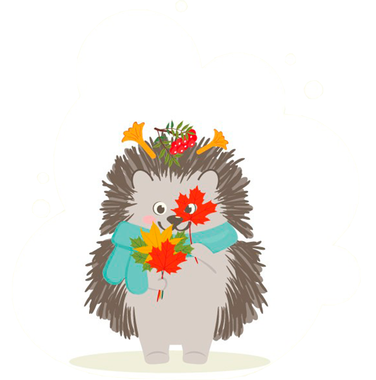
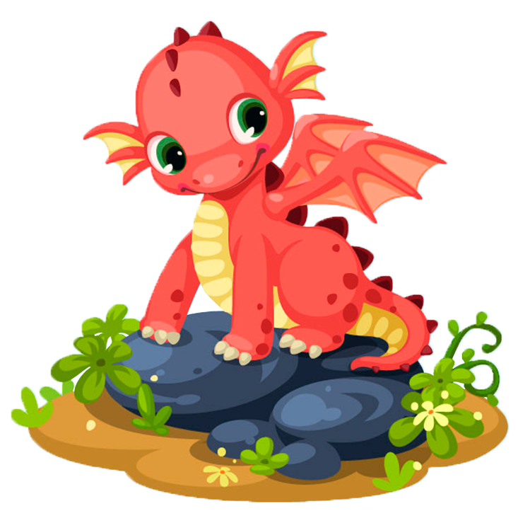

Мои эксперименты с Parallax
Лесные сказки

Однажды в лесу
Жил в лесу ёжик. В погожий, солнечный день отправился ёжик на прогулку, а заодно и грибов насобирать.
Идёт. Слушает как щебечут птички. Смотрит как они перелетают с дерева на дерево, с ёлки на ёлку.
Спросил ёжик птичек: «Скажите, пожалуйста, птички, где полянка с грибами? Хочу на зиму запасы сделать. Вы высоко летаете. Вы далеко видите и всё знаете.»
Птички громче стали щебетать и быстрее перелетать с дерева на дерево, с ёлки на ёлку.
Ёжик не отстаёт, за ними идёт. Подпевает. Он так увлёкся, что не заметил, как вышел на полянку. А там... Видимо-невидимо грибов!
Обрадовался ёжик. Стал собирать грибы и птичек благодарить. Будет что зимой кушать ёжику.
А ты, дружок, любишь собирать грибы?

Дракончик
Жил-был маленький дракон. Однажды он увидел, как красиво его мама выглядит на горе из золота, и захотел иметь такую же гору.
Когда мама улетела по делам, дракончик отправился за драгоценностями. Он заметил обоз и решил напасть на него, понадеявшись на свою силу.
Подлетев к самому первому всаднику, дракончик дыхнул на него огнём. Но всадник не испугался и не сгорел, а лишь усмехнулся и взмахнул мечом, рассекая струю пламени.
Увидев силу человека, маленький дракон испугался и заплакал на весь лес! Человек очень удивился, подошёл к дракончику и погладил его по голове. Малыш успокоился, извинился и рассказал, почему хотел напасть на обоз.
Выслушав дитя, всадник сказал, что драконы — это хранители золота, а воруют только слабые и злые. Дракончик удивился и отправился к матери. Ему хотелось побыстрее разузнать всё про золото.
Вернувшись домой, малыш получил от мамы взбучку, потому что покинул пещеру без разрешения. А уже потом и ответ на свой вопрос: зачем на самом деле драконам золото?
Питаются драконы мясом, а от золота им ни жарко ни холодно, ни к чему оно им. Разве что для красоты. Поэтому люди оставляют драконам золото на хранение, а платят мясом животных. Чем сильнее дракон, тем больше у него клиентов и тем больше еды. Тех же, кто получает золото нечестным путём, другие драконы презирают.
Услышав эту историю, дракончик понял, что не хочет воровать, а хочет стать самым сильным, чтобы иметь не только гору золота, но и уважение окружающих.